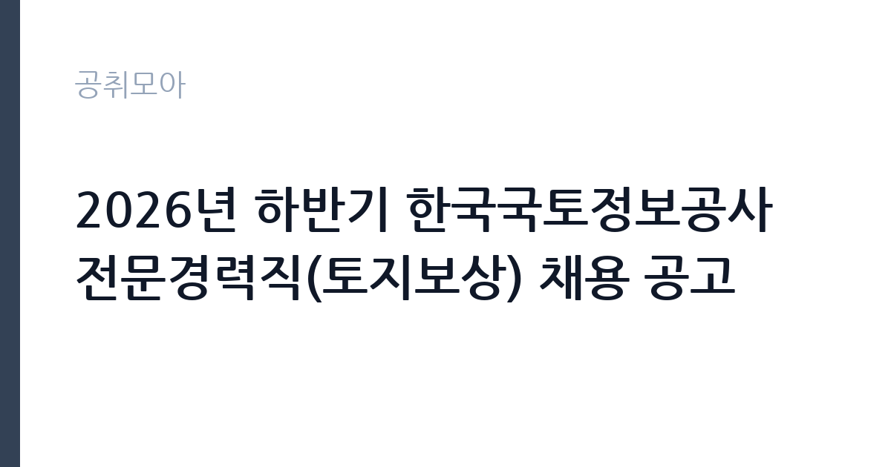

[공공기관] 2026년 하반기 한국국토정보공사 전문경력직(토지보상) 채용 공고
한국국토정보공사 · 전북 · 마감 2026-11-17 (D-14) · 출처 잡알리오

한눈에 보는 모집 조건
| 기관 | 한국국토정보공사 |
|---|---|
| 공고명 | 2026년 하반기 한국국토정보공사 전문경력직(토지보상) 채용 공고 |
| 고용형태 | 정규직 |
| 근무지 | 전북 |
| 게시일 | 2026-11-03 |
| 마감일 | 2026-11-17 (D-14) |
지원자격, 이렇게 읽으세요
- 공공기관 채용공시
- 세부 조건은 원문 공고문 확인
정규직 채용은 기간의 정함이 없는 근로계약을 전제로 합니다. 수습 기간을 두고 평가한 뒤 정규직으로 확정하는 절차가 일반적이며 기관의 인사 규정과 임금 체계를 적용받습니다. 이번 공고는 한국국토정보공사가 직접 진행하는 자체 전형입니다. 공사 인사규정 제15조의 결격사유가 없어야 하고, 성별·나이 제한은 없지만 정년인 만 60세 이상은 지원할 수 없습니다. 남자는 병역을 마쳤거나 면제되어야 하고, 해외여행에 결격사유가 없어야 합니다. 채용시험 중 부정행위로 처분된 날부터 3년이 지나지 않은 사람과 정당한 사유 없이 임용에 불응해 1년이 지나지 않은 사람은 제한됩니다. 필수요건은 공고문에 별도로 정리되어 있으므로 지원 전에 원문을 확인해야 합니다. 경력 인정 여부는 증명서 기재 내용으로 결정되므로 직무 기술을 상세히 요청하십시오. 자격증은 유효 기간과 등록 상태를 확인해야 합니다. 갱신이 필요한 자격이라면 갱신 여부를 먼저 점검하십시오. 이 공고 원문에 적힌 응시 조건 문구는 '성별, 나이 제한 없음.' / '(제한)채용시험 중 부정행위를 한 자로서 그 처분이 있는 날로부터 3년이 경과되지 아니한 자' / '(제한)정당한 사유없이 임용에 불응한 자로서 1년을 경과하지 아니한 자'입니다. 문구를 그대로 읽고 본인 해당 여부를 하나씩 표시해 두면 서류 단계에서 탈락하는 일을 줄일 수 있습니다.
이 공고의 포인트
이 공고의 첫 번째 포인트는 고용 형태입니다. 수습 기간 평가를 통과하면 기간의 정함이 없는 신분이 되어 고용이 안정됩니다. 두 번째는 업무 범위가 명확하다는 점입니다. 전문경력직(토지보상) 직무로 채용되므로 배치 이후 담당 업무가 크게 흔들리지 않습니다. 세 번째는 근무지입니다. 전북 지역 근무로 수도권 공고에 비해 지원자 분포가 넓지 않아 상대적으로 경쟁이 분산되는 경우가 있습니다. 처우와 근무 형태가 표로 정리되어 있어 비교해 보기에 편한 공고입니다. 같은 직무로 함께 올라온 공고 7건 가운데 마감이 중간에 위치하므로 다른 공고와 일정이 겹치는지 확인하십시오. 선발 인원은 공고문에 명시되어 있으니 모집분야 항목을 함께 확인하십시오.
전형은 어떻게 진행되나
1차 서류, 2차 면접의 2단계로 진행되는 구성이 일반적입니다. 서류에서는 자격 요건과 경력 증빙을 확인하고, 면접에서는 실제 업무 수행 능력과 조직 적응을 봅니다. 직무에 따라 필기시험이나 실기, 컴퓨터 활용 시험이 추가되기도 하므로 공고문의 전형표를 먼저 확인하십시오. 단계별로 합격자만 다음 전형에 응시할 수 있고, 단계마다 응시 자격 확인 서류를 다시 제출해야 하는 경우가 있습니다. 최종합격자 발표 후에는 신원조회와 채용 신체검사가 남아 있습니다. 전형 일정이 공고문에 날짜로 명시되어 있으니 달력에 옮겨 두고 준비하십시오.
원문에서 확인한 전형 방식
ㅇ일반요건 - 공사 인사규정 제15조 결격사유에 해당하지 아니한 자 - 성별, 나이 제한 없음. 단, 공사 정년(만 60세) 이상자 제외 - 병역을 필하였거나 면제된 자(남성만 해당) - 해외여행에 결격사유가 없는 자 - (제한)채용시험 중 부정행위를 한 자로서 그 처분이 있는 날로부터 3년이 경과되지 아니한 자 - (제한)정당한 사유없이 임용에 불응한 자로서 1년을 경과하지 아니한 자 ㅇ 필수요건 - 채용공고문 참조
이런 분께 추천해요
- 토지보상·보상협의 실무 경력이 있는 분
- 감정평가 결과 검토와 수용 절차를 다뤄본 분
- 현장 조사와 민원 응대가 가능한 분
지원 전 체크리스트
- 응시자격 요건과 경력 기준을 충족하는가 — 경력은 증명서로 입증해야 합니다
- 수습 기간과 정규직 전환 조건을 확인했는가
- 제출서류 목록을 모두 준비했는가 — 누락 시 서류 단계에서 탈락합니다
- 접수 마감 2026-11-17 이전에 접수 방식을 확인해 제출했는가
모집 일정과 제출 타이밍
접수 마감은 2026-11-17이고 공고는 2026-11-03에 게시되었습니다. 준비 기간 14일 안에 서류 작성, 증빙 발급, 접수를 모두 마쳐야 하므로 주말을 포함해 일정을 미리 나누는 것이 좋습니다. 특히 경력 기술서나 직무수행계획서를 요구하는 공고는 작성에 시간이 걸리므로 첫날 초안을 잡으십시오. 서류 합격자 발표와 면접 사이 간격이 짧은 경우가 많아 면접 예상 질문은 서류 제출 전에 정리해 두는 편이 유리합니다. 마감 직전에는 접속이 몰리므로 여유를 두고 제출하십시오. 마감 이후에는 어떤 사유로도 접수가 인정되지 않으므로 하루 전 제출을 목표로 하십시오.
직무 이해하기: 공공기관
한국국토정보공사 토지보상 분야 전문경력직은 공공사업에 편입되는 토지와 물건의 보상 업무를 맡습니다. 사업 지구의 토지와 건축물, 영업권 현황을 조사하고 보상 기준에 따라 산정 자료를 만듭니다. 감정평가사와 협의해 평가 결과를 검토하고, 소유자와 이해관계인에게 보상 내용을 설명합니다. 협의가 이뤄지지 않으면 수용 절차에 필요한 서류를 준비합니다. 보상 협의 과정에서 민원이 자주 발생하므로 근거 자료와 절차 기록을 정확히 남기는 것이 중요합니다. 직무 교육은 입사 후 기관 자체 계획에 따라 진행되므로 사전 경험이 없어도 시작할 수 있습니다.
자기소개서 작성 팁
지원서는 토지보상 경력을 사업 규모와 역할 중심으로 정리하는 것이 핵심입니다. 참여한 사업의 면적과 보상 건수, 본인이 맡은 업무 범위, 협의 성사율 같은 수치를 제시하십시오. 감정평가·수용 절차와 관련한 실무 경험은 가장 앞에 배치할 만합니다. 공간정보와 지적 업무를 함께 다루는 기관이라는 점을 이해하고 있다는 문단을 더하면 준비도가 드러납니다. 구성은 지원 동기, 직무 경험, 기여 방안 순서가 무난합니다. 지원 동기는 한국국토정보공사의 사업 중 본인이 관심을 가진 부분을 한 가지로 좁혀 서술하고 추상적인 표현은 줄이십시오. 직무 경험은 담당했던 업무와 규모, 결과를 수치로 제시하면 설득력이 올라갑니다. 기여 방안은 입사 후 첫 3개월과 1년 계획으로 나눠 쓰면 준비도가 드러납니다.
면접 준비 포인트
면접에서는 보상 실무 경험을 사업 단위로 확인합니다. 보상 기준이 해석에 따라 달라질 때 어떻게 정리했는지, 소유자가 보상액에 반발할 때 어떤 근거로 설명했는지 묻습니다. 감정평가 결과를 검토한 경험과 수용 절차 서류 작성 경험도 질문 대상입니다. 현장 조사와 민원 응대를 함께 해낼 수 있는지 확인하므로, 현장 경험을 구체적으로 답하십시오. 면접 당일 신분증과 제출서류 원본을 요구하는 경우가 있으니 공고문의 준비물 목록을 확인하십시오.
급여·근무조건 읽는 법
한국국토정보공사는 알리오 2025년 결산 공시 기준 평균 연봉 약 8,189만원, 신입사원 초임 약 4,687만원으로 집계됩니다. 다만 이번 채용은 전문경력직으로 경력 인정 결과에 따라 직급과 초임이 달라지므로, 공시된 신입 초임이 그대로 적용되지 않습니다. 평균 연봉은 기본급에 수당과 성과급, 급여성 복리후생비를 합산한 값이라 월 기본급과 차이가 큽니다. 구체적인 처우는 공고문과 채용 절차 안내에서 확인하십시오. 2026년 적용 최저임금은 시급 10,320원, 월 환산 2,156,880원(주 40시간·209시간 기준)입니다. 고용노동부 고시 제2025-47호로 확정된 금액입니다. 공고문에 금액이 제시되지 않은 항목은 원문 보수표나 처우 설명에서 확인해야 하며 확인되지 않은 수치는 쓰지 않는 것이 원칙입니다. 비교할 때는 월 급여뿐 아니라 상여·명절휴가비·복지포인트·초과근무수당까지 포함한 연간 총액으로 계산하십시오. 기간제라면 계약 기간 동안의 총액을, 무기계약이라면 호봉 상승과 정년까지의 누적 소득을 기준으로 판단하는 편이 정확합니다.
자주 묻는 질문
- 선발 인원은 몇 명인가요?
공고문의 모집분야 항목에 직종별 인원이 표로 제시되어 있습니다. 첨부된 공고문 원문에서 확인하십시오. - 근무지는 어디인가요?
전북 지역의 한국국토정보공사 소속 근무지입니다. 세부 주소와 출퇴근 조건은 원문 공고문에서 확인할 수 있습니다. - 보수는 얼마인가요?
채용 신분(정규직)과 기관 임금 규정에 따라 정해지며 구체적인 금액은 공고문 처우 항목에 제시됩니다. 금액이 공개되지 않은 경우에는 원문의 보수표를 확인하십시오.
함께 보면 좋은 공고
[공공기관] 한전KDN(주) 경남사업처 배전자동화 성능관리분야 비정규직 모집공고 — 마감 2026-11-18[공공기관] 한국폴리텍대학 남대구캠퍼스 업무직(대학운영직_조리사) 채용(2차) 공고 — 마감 2026-11-11[공공기관] 한국폴리텍대학 남대구캠퍼스 행정지원직원(휴직대체_학사지원직) 채용 공고 — 마감 2026-11-11출처: 잡알리오 공개정보를 바탕으로 공취모아가 정리한 안내글입니다. 모집 조건·일정은 변경될 수 있으니 지원 전 반드시 원문 공고문을 확인하세요. 본 글은 정보 제공용이며 합격을 보장하지 않습니다.